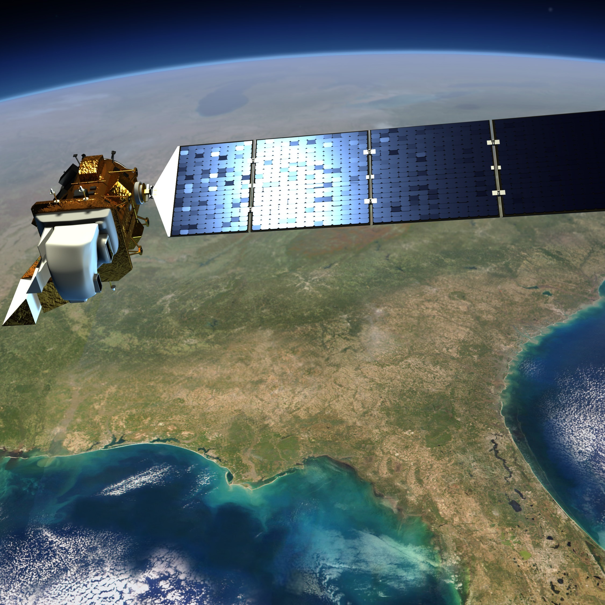

Welcome, traveler! Thanks for visiting.
Have a look around…
About Me
my story
I am a freelance data & geomatics professional and writer with a love for all things nature. I enjoy making sense of data and using visualization to bring information to organizations to help make better decisions, create better designs, and build a better future. As a former aerospace engineer, I found it easy to feel small staring up at the sky and stars in space. However, now I’ve found an even deeper appreciation for my existence by gazing back down at earth, whether it be from hiking through mountain terrain, diving through vast oceans, or exploring spatial imagery and datasets for a bird’s eye view of our planet. I’m always looking for interesting projects, opportunities or just to swap nature or travel stories! Feel free to send me a message or connect with me below.
Nikhil Das
Portfolio
Some projects I’ve worked on.
Bull Kelp Estimation
Web Maps, ArcGIS, ModelBuilder
Point Reyes Wildfire
Cartography
Shark Watch
Dashboards, Web Scraping, Web Maps
UNESCO Leaflet Map
Web Maps, Web Scraping, Markdown
Ozone in California
Spatial Analysis, Cartography
Exploring SES & Health
Tidyverse, R-Markdown
Exploring Northern California’s Bull Kelp Forests Using Satellite Imagery
Sea otters roaming amongst bull kelp. Photo by Kieran Wood on Unsplash
Overview
Originally published here in Towards Data Science, I set out to on a project to investigate kelp forests in California using publicly available Landsat satellite data. Kelp forests in California have been in decline along the California coastline, with bull kelp [Nereocystis luetkeana] being especially sensitive to both climate change and an overabundance of sea urchins due to the 2013 sea star wasting disease [1]. Climate change is thought to be partially responsible for the degradation of these kelp forests but to what degree is still unknown. Researchers observed a period of persistent kelp loss from 2014–2019 along Northern California, and various West Coast institutions are investigating methods to enhance kelp monitoring efforts [3]. The purpose of this article is to investigate a subset of coastline thought to be affected, with publicly accessible tools and data.
Final Webmap
Final Map
Background
Kelp forests in California have been in decline along the California coastline, with bull kelp [Nereocystis luetkeana] being especially sensitive to both climate change and an overabundance of sea urchins due to the 2013 sea star wasting disease [1]. Climate change is thought to be partially responsible for the degradation of these kelp forests but to what degree is still unknown. Researchers observed a period of persistent kelp loss from 2014–2019 along Northern California, and various West Coast institutions are investigating methods to enhance kelp monitoring efforts [3]. The purpose of this article is to investigate a subset of coastline thought to be affected, with publicly accessible tools and data.
As a former aerospace engineer, nature lover and overall data geek, I have been increasingly interested in the ways we can streamline access to scientific data for the environment, for both professionals and enthusiasts alike, while spreading a message I find deeply important; our world is changing and our tools are advancing, but how we use those tools will greatly determine our future on this planet.
Using ArcMap 10.7 software, this project explores the uses of publicly available satellite imagery to monitor changes in these kelp forests, which act as important habitats and nurseries for a variety of marine species. In addition to sea star wasting disease, the loss of predatory sea otters to feed on urchin populations could further affect the ecosystem balance, due to the loss of this apex predator. Additionally, large marine heat wave events have been observed during those years, adding to the list of stressors facing bull kelp forests.
For more background on the Landsat 8 satellite program, see here. Some knowledge of geospatial analysis and remote sensing is helpful for reading this article, and resources are widely available online.
Ok. Let’s get started…
Terminology
A few background terms are listed below, but a general familiarity with geospatial information systems (GIS) is useful for understanding the work in this article. A quick overview can be found here, and elsewhere on the web.
Buffer — In geographic information systems and spatial analysis, buffer analysis is the determination of a zone around a geographic feature containing locations that are within a specified distance of that feature, the buffer zone
Landsat — a joint USGS/NASA scientific satellite that studies and photographs the earth’s surface by using remote-sensing techniques. For background and resources on the Landsat 8 satellite program, see this overview from the USGS.
RGB — RGB (red, green, and blue) refers to a system for representing the colors to be used on a computer display. Red, green, and blue can be combined in various proportions to obtain any color in the visible spectrum
GIS — A geographic information system is a conceptualized framework that provides the ability to capture and analyze spatial and geographic data
NDVI — The normalized difference vegetation index (NDVI) is a simple graphical indicator that can be used to analyze remote sensing measurements, often from a space platform, assessing whether or not the target being observed contains live green vegetation, by using reflected light in the visible and near-infrared bands.
Raster — In its simplest form, a raster consists of a matrix of cells (or pixels) organized into rows and columns (or a grid) where each cell contains a value representing information, such as temperature. Raster images are digital aerial photographs, imagery from satellites, digital pictures, or even scanned maps.
Mask — Masking is a technique used to clarify dense or detailed map content by having the features of one layer hide, or mask, features of another layer where they overlap.
Setup
For this analysis, Landsat 8 images for the peak kelp months of September thru November from 2015–2019 were retrieved from the USGS Earth Explorer (See this guide on retrieving Landsat Imagery, and this guide for raster band definitions for Landsat 8). During this timeframe, persistent kelp loss has been widely observed, following a severe kelp loss event in 2014 along Northern California, and the hope is to explore a subset of this region in detail. Scenes from Path 45/Row 33, were used at each date, as seen in red below.
Figure 1: Location of interest for kelp detection via USGS Earth Explorer
I chose this region because it was confined to one Landsat ‘scene’ from a single Landsat program, that primarily contained bull kelp [2]. Staying within one program, Landsat 8, eliminated the need to compare imagery across programs, which presents its own challenges. Landsat 8 was launched in 2013, but as of the writing of this article, there are plans for Landsat 9 to be launched late September 2021, that will provide continuous earth imaging in the coming years.
Historically, bull kelp has been more sensitive to urchin barrens and climate change due to its seasonal growth nature. Data over the peak kelp growth period — September thru November — was averaged to characterize kelp quantity for a particular year. Four files for each date, and three dates per year led to 60 files in total. They were chosen based on low cloud cover and follow the format listed below in Table 1.
Table 1: Example Landsat 8 file format for analysis. Four .TIF files for each date.
The images were buffered and masked from the coastline to include only water from 200 to 2000 meters offshore, in order to help minimize coastal classification errors from beached debris, sand, rocks, and other terrain that wasn’t kelp or water.
Additionally, clouds and smoke were masked out using the Band 1 and QA raster bands to further reduce errors in the data when classifying.
Methods
For simplicity, a Normalized Difference Vegetation Index (NDVI) was used to detect bull kelp locations. I explored other kelp classification methods, and some relevant research papers on those methods are listed at the end for further reading.
The NDVI for Landsat 8 imagery, is typically used in farmland and terrestrial vegetation, and is derived from the visible Red band (Band 4) and the Near-Infrared (NIR, Band 5) in the following formula:
This results in an index that ranges from -1.0 to +1.0, with higher values indicating vegetation is present. The pixel quality (QA) and aerosol (B1) raster data was used to remove cloud and smoke pixels from evaluation, when possible.
Using ArcGIS Raster Calculator, the NDVI was calculated for each raster data set of interest, and low positive values in water were assumed to be kelp.
The results were “intersected” in ArcGIS with the buffered study area after masking out clouds and smoke. A preliminary NDVI map within the area of interest is shown below in Figure 2 as an example, with regions of vegetation shown in white. This was further developed into an ArcGIS Model using Model Builder and is shown in Figure 4.
Figure 2: Example of NDVI within Study Area in ArcGIS Desktop 10.7
Results
Although the general trend for 2015–2019 in this analysis is consistent with the reduction in bull kelp during peak growth fall months, these results are preliminary and should be compared to ‘ground-truth’ data, i.e. verified locations of kelp forest either through aerial imagery or diver surveys. Data was averaged across fall months, while several factors were not considered, that will need to be studied in the future. Some of these factors are listed at the end.
For reference, an American Football field is about 1.3 acres or 0.005 square kilometers.
Figure 3: Area of Kelp Coverage by Year in study area
Figure 4: Kelp Estimator tool I built in ArcGIS Model Builder
Discussion
Results from this analysis are mixed and a more thorough analysis would be needed to make more definitive conclusions. The assumptions and notes listed below should be considered for future study, including exploring other indices and cloud masking techniques. In general, 2019 shows a significant decline in total kelp detected, but while the data may support the conclusion that detectable kelp declined across the years surveyed, it’s highly subject to which portion of the data one looks at.
Still, it’s possible these results are an artifact of the years or months chosen for analysis. The broad spacing of dates surveyed, while intended to capture long-term variability, may instead be capturing a snapshot of the localized climate and ocean condition variation — 2014–2016 were El Nino years, and all years surveyed besides 2019, were considered California drought years. Analyzing a larger set of dates could help tease out these distinctions.
Figure 5: Landsat 8 illustration above Earth. Illustration from USGS
Another limitation is both the spatial (image pixel area) and temporal (time) resolution. Landsat 8 image data is captured every 16 days at a 30m resolution, meaning each pixel stands for a 30m x 30m area on the ground. As expected, bull kelp vegetation was hard to capture at this resolution, and it may not be suited to this task.
Sentinel-2A, on the other hand, has higher resolution imagery (up to 10m). Launched in 2015, Sentinel data may provide better images to estimate these types of changes as time goes on and more data is captured. Some differences between the two satellite’s image bands are summarized here, however, this data was difficult to obtain for the region and dates of study, and will need to be further explored. Higher resolution imagery is available from private institutions, such as Planet Lab’s PlanetScope satellites (up to 3m), and are being investigated as an alternative.
Figure 6: A purple urchin barren in California. Photo courtesy of the Noyo Center in Fort Bragg, CA
As mentioned earlier, there are many methodologies besides NDVI under current study at West Coast institutions, and are well summarized and tabulated in [3]. These include but are not limited to the Floating Algae Index (FAI), Scaled Algae Index (SAI), Multiple Endmember Spectral Mixing Analysis (MESMA), and Normalized Difference Algae Index (NDAI), and were outside the scope of this initial exploration.
In general, these methods of classification are consistent, but dependent on the underlying assumptions and training data. It’s possible that digitizing kelp habitat using these alternative methods, could yield more reliable results. A web map has been developed by UCLA KelpWatch project [4], and a goal to develop a similar map specific to bull kelp degradation, would be a future goal of this project.
A final map is shown below in Figure 5, highlighting a sub region in the area of interest from Galloway, CA to the Point Arena Lighthouse, which upon visual inspection, tracks well to the 2015–2019 Q3 data from KelpWatch [4].
Figure 7: Kelp Estimation during peak months in Northern California 2015–2019 in ArcGIS Desktop
This exploratory analysis just scratches the surface (pun intended üòú) and a list of notes and assumptions are listed below, that should be explored in future study.
Notes & Assumptions
Just a few of the challenges encountered are listed below.
1. Sparse or submerged kelp, can to be difficult to detect [3]. Based on [5] there was ~75% reduction in Sargassum (brown seaweed) detectability when observed in natural water habitat vs out of water. Similar assumptions were made for kelp detection in this study.
2. Other factors may also influence amount of detectible kelp, such as kelp length in water column, tidal height, turbidity/currents, bathymetry, and general water conditions.
3. Yearly weather anomalies (el Nino, high drought years, marine heatwaves) can also affect results. NOAA’s high-resolution sea surface temperature (SST) data set is available here.
4. Variability in the time of sensor images taken, can influence reflected light captured.
5. Presence of phytoplankton in study area can be confused for kelp. This can be especially true for data between February and September.
6. Ground truth data is needed to validate this study. Historically, this is done through aerial imagery or diver surveys in the water.
7. Individual pixels (30m x 30m) are not ‘unmixed’ here and kelp can be hard to detect if it is in less than 15% of 30m pixel. MESMA is one such technique to do this [2].
What Now?
I learned so much working on this project, and outside of the scientific and technical challenges discussed already, there are many things I would like to see happen in the future to spread the message that kelp forests are at risk, while increasing access to kelp data for researchers and enthusiasts alike.
From a research standpoint, periodically revising the growing list of kelp assessment methods and standards such as [3], could help consolidate and streamline approaches to monitoring kelp across research institutions. GIS software licenses can be a resource challenge, but fortunately open source software exists today, such as QGIS, while GIS packages and libraries in R and Python can handle geospatial data processing. I was able to obtain a ArcGIS license through a geospatial analysis class I enrolled in.
Another challenge in exploring the data, was the large size of the Landsat image TIF file data. Analyzing a large number of high resolution images can overburden local machines, thus limiting individuals without good computing power and storage.
From a public facing standpoint, engaging the public on kelp is always a challenge for those who don’t live near the coasts or spend time in the ocean. Beach cleanups, group snorkel tours through kelp forests, or coastal hikes are just a few of the ways to help engage the public and raise community awareness.
Continuing to grow and foster partnerships between research institutions, non-profits and the community will be vital in monitoring our kelp forests. One such example already underway is the Greater Farallones Kelp Recovery Program, a joint program between the Greater Farallones Association, The Nature Conservancy, and other organizations, aimed at protecting and restoring kelp forests along the northern California coastline.
Figure 8: The Point Arena Lighthouse at the north end of study area. Photo by Bruno Wolff
As mentioned earlier, the KelpWatch project [4] has a map that gives a great overview of the kelp decline over the past few decades, and is a useful tool for the public to see kelp decline dating back to 1984. This map can serve as an example of ways to display scientific data to the public regarding climate change impacts over time, and can be applied to any ecosystem or species.
Finally, engaging students or enthusiasts to play with spatial analysis tools through free online workshops or training, by highlighting conventionally ‘popular’ topics, could help to engage more of the public. This could include whale and shark migration, invasive lionfish tracking, global coral spawning events to name a few. For geospatial analysis the possibilities are endless!
I’m hopeful that with the advances in technology and democratization of open-source tools and data we have today, we will be able to make better decisions for our future!
[2] Dennis J.I. Finger, Meredith L. McPherson, Henry F. Houskeeper, Raphael M. Kudela, 2021. “Mapping bull kelp canopy in northern California using Landsat to enable long-term monitoring”. https://doi.org/10.1016/j.rse.2020.112243.
[3] Sarah B. Schroeder a, Colleen Dupont, Leanna Boyer, Francis Juanes , 2019. “Passive remote sensing technology for mapping bull kelp (Nereocystisluetkeana)”: A review of techniques and regional case study. https://doi.org/10.1016/j. gecco.2019.e00683.
[5] Dierssen, H.M., Chlus, A., Russell, B., 2015. “Hyperspectral discrimination of floating mats of seagrass wrack and the macroalgae Sargassum in coastal waters of Greater Florida Bay using airborne remote sensing”. Remote Sens. Environ. 167, 247e258. https://doi.org/10.1016/j.rse.2015.01.027.
[6] Hamilton, S. L., Bell, T. W., Watson, J. R., Grorud‐Colvert, K. A., & Menge, B. A. (2020). “Remote sensing: generation of long‐term kelp bed data sets for evaluation of impacts of climatic variation”. Ecology, e03031. https://esajournals.onlinelibrary.wiley.com/doi/abs/10.1002/ecy.3031.
Estimating Wildfire Damage Using Satellite Imagery
Harnessing Landsat 8 satellite imagery to estimate wildfire damage
Overview
I wanted to investigate and estimate the 2020 Woodward Fire Damage in an area of California I care deeply about. Point Reyes is one of my favorite places to explore, and I was so lucky to live so close to such a space. Unfortunately there was a devastating fire in 2020 called the Woodward Fire, where over 4000 acres of land were damaged and the park was closed to visitors for much of the fire season. I compared fall data for 3 years and used Image Classification to estimate land types in each yearly dataset. I wanted to compare actual fire damage based on official estimates, versus the classified raster data of Point Reyes using Landsat 8 satellite imagery. Based on my efforts, using ArcGIS I estimated ~6% of the park was damaged due to wildfire, whereas official estimates are closer to 7%. This is a reasonable first approximation and was simplified with many future improvements that can be made. The final map and Model Builder tool I built are shown below.
Final Map
Fire Assessment Model Builder Tool
SharkWatch
Harnessing the power of social media for shark conservation
Overview
I developed this tool, to monitor shark fishing across California for Shark Stewards, a non-profit dedicated to the conservation of sharks. Harnessing the power of web scraping in Python and data visualization in R Leaflet and Flexdashboard packages, I summarize findings into an interactive dashboard.
UNESCO Interactive Map
Mapping the World's UNESCO Heritage Sites
Overview
As part of a side project, I developed an interactive map displaying UNESCO Heritage Sites. This project was exploratory in nature and did not involve a straight path, but rather allowed me to explore difference approaches. I experimented and learned many methods along the way, outlined below.
Python/Google Maps Method
Access and compile list of all the UNESCO Sites, using XML data with Python (urllib,xml,json,sqlite3).
Stores info into array in text file.
Then text file is read in, and a good search on all heritage sites is done, storing lats & longs in SQLITE
extract SQLITE data to .JS file. HTML file used to plot data using Google Maps API
(Optional) Store all the Heritage data in a Pandas Dataframe and a CSV file for downstream flexibility
However…I wanted to take it a step further and try to do the same in R+Github+Leaflet…
R/Leaflet Method
Read in the CSV file made earlier, as an R data.frame
Using leaflet package in R, customize an interactive map, and markers to display UNESCO data
Publish map to RPubs and embed iframe object into my website! Customize sizing as needed
Final Map, Code and R-Markdown
Ozone Concentation in California
Using Zonal Statistics to convey spatial information about California's Ozone Concentration
Overview
I developed three figures as part of a project to investigate the relation between elevation, income and ozone concentration in California. Final map and steps are outlined below.
Final Map
Steps
Primary California Map:
Join on the air quality Points table to join the ozone_averages table to the air_quality layer, using Site and Site ID to link them.
create a TIN to interpolate ozone levels across California, using ozone levels for Z-value (height). Convert the TIN to Raster
Use “Zonal Statistics as Table” to summarize the raster data (input value raster) on GEOID (zone field) of Census map (feature zone data). Run MEAN To get averages for each census tract/boundary
Join this Zonal Summary table to the Census Tract data using the GEO ID as the joining fields
Dissolve the appended Census_Tract_with_ozone data to the county level, using MEANS. and then change symbology to reflect the classes for display.
Secondary Map:
Using the Raster that was created to extract date onto the census tracts, create a 2nd data frame
Add the Raster to this data frame
Add the Census Map to this data frame.
Income vs Ozone Graph:
Using the Create Graph function, use the undissolved census data with ozone date joined, to plot the census tract income versus the ozone levels
Do this by View>Graphs>Create Graph and use the x/y field inputs
Health Risks & SES
Health Risk and Socioeconomic Status using CDC Behavioral Risk Factor (BRFSS) Data
Overview
As part of a side project I developed a study to investigate the effects of various socioeconomic factors to health issues
R Markdown Report
Timeline
My career path...
2011-2017
My Humble Beginnings
I spent the first years of my career at Boeing, as a structural engineer. I worked on both new 777X and 747 legacy programs.
Summer 2017
Life-Changing Trip
I spent four months backpacking across diverse terrain, that inspired me to go towards the natural world.
Summer & Fall 2018
R&D Engineer
I spent time as an R&D Engineer for medical and maritime industries.

2019-2020
Rocket Science
I spent time at Moog crunching large datasets, delivering technical reports and improving satellite designs.
2021
Freelance GIS & Data Professional
I’ve worked on a number of geospatial and data analysis projects, and occasional web design like the page you're on now!
Be Part of My Story!
Skills
Some things I've learned along the way
GIS
I have developed skills in geographic information systems conducting spatial & imagery analysis
Data Analytics
I enjoy bringing insights from broad databases to interactive dashboards
Tools
I utilize industry standard R & Python packages
Technical Communication
I’ve presented to clients, management and tech boards to convey a variety of information
Cartography
I’ve made a variety of maps across a range of landscapes